逐秒帧附录 · 玩法架构证据图 18s · 石桥
18s · 石桥
树根形成低矮门洞。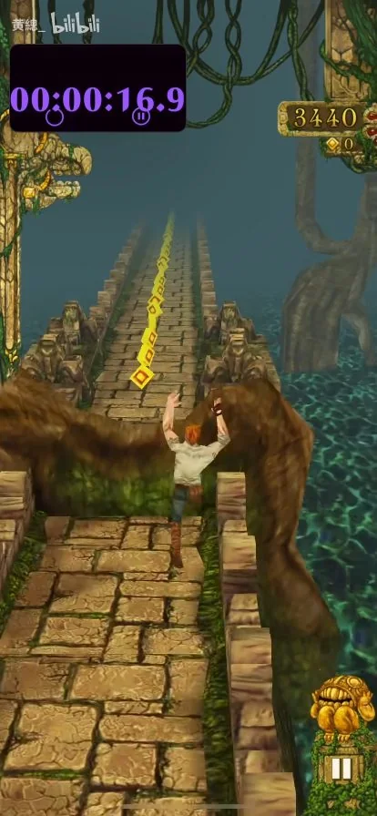
19s · 石桥
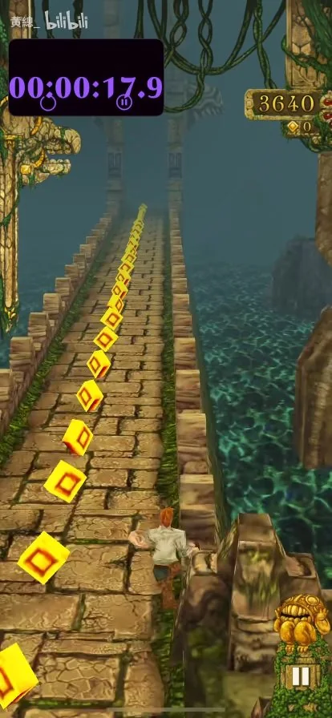
20s · 石桥
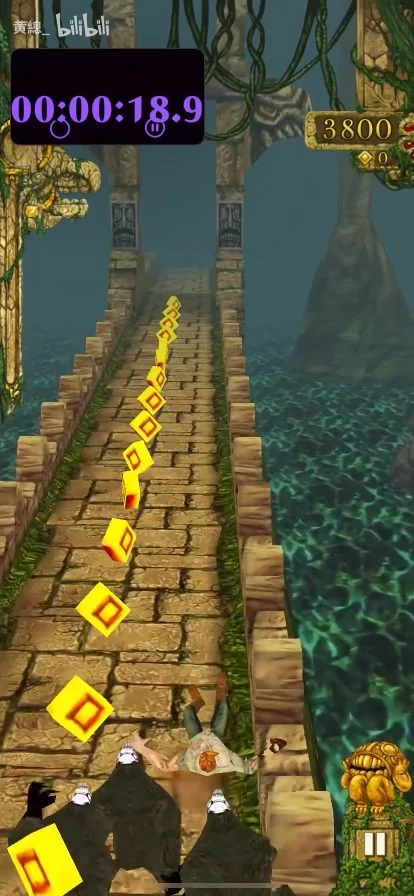
21s · 石桥
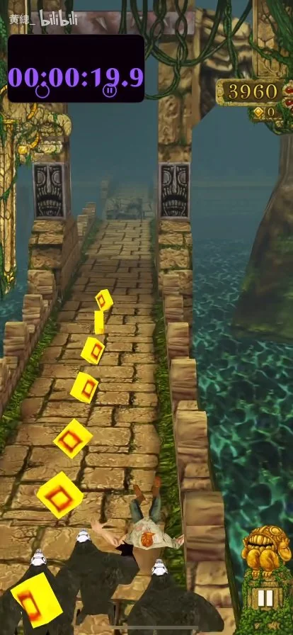
22s · 石桥
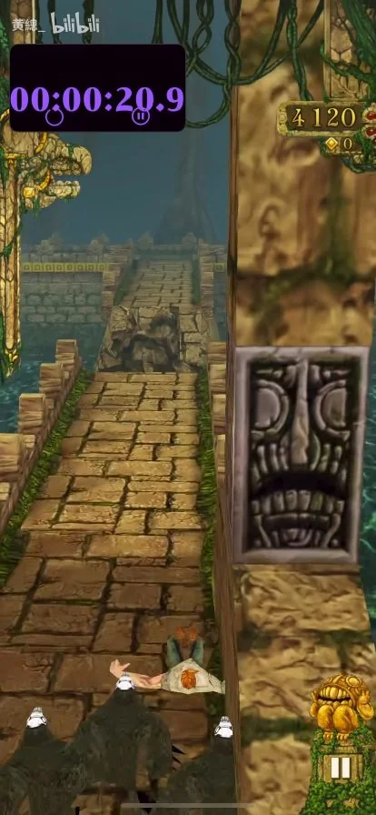
23s · 石桥
 24s · 石桥
24s · 石桥
路面缺口；角色与追逐猴跃起。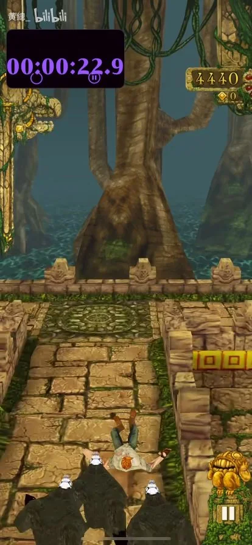
25s · 石桥
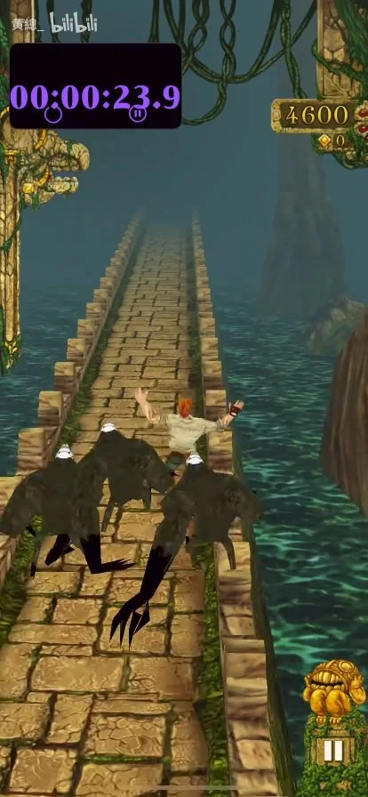
26s · 石桥
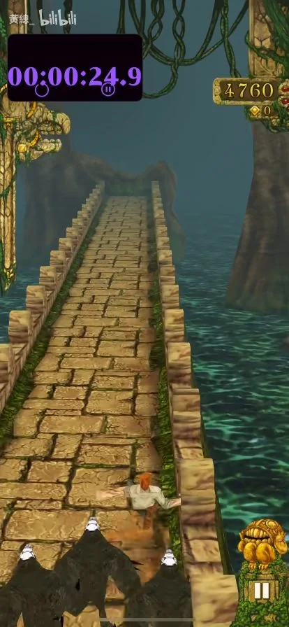
27s · 石桥
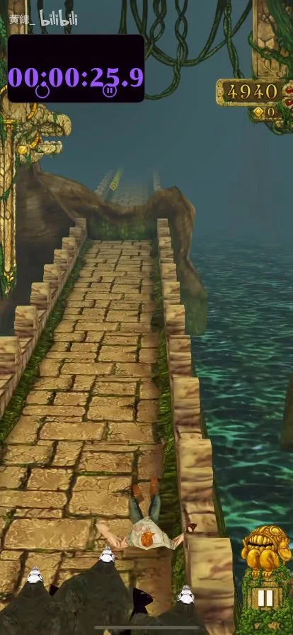
28s · 石桥
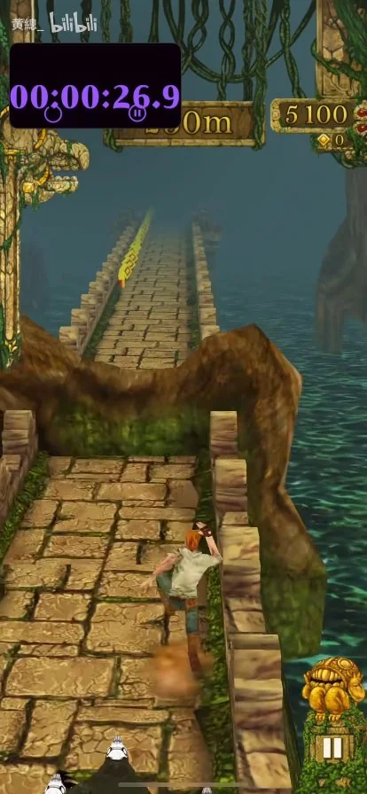
29s · 石桥
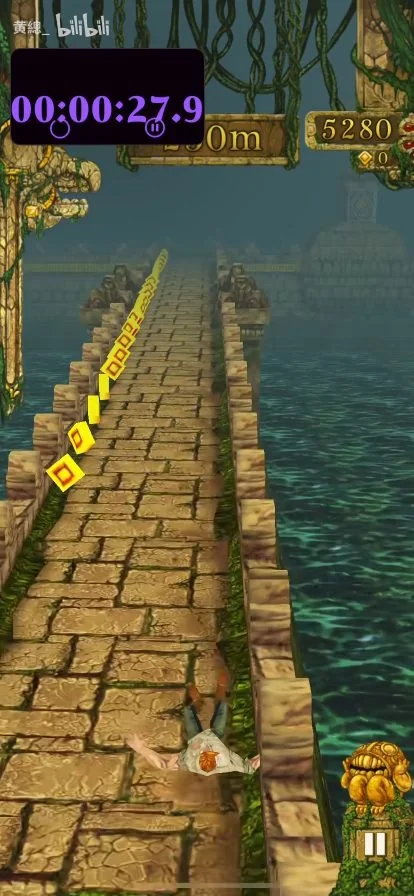
30s · 石桥
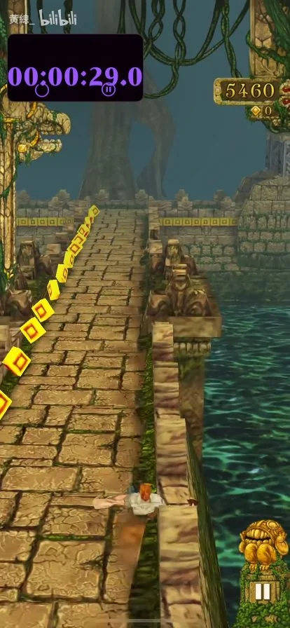
31s · 石桥
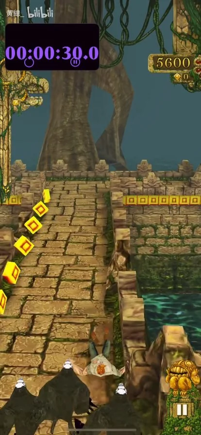
32s · 石桥
 33s · 石桥
33s · 石桥
路口外侧巨树。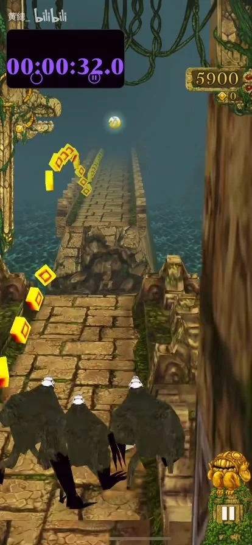
34s · 石桥
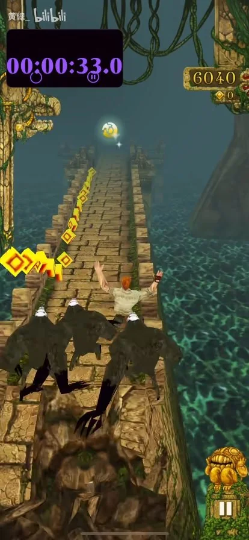
35s · 石桥